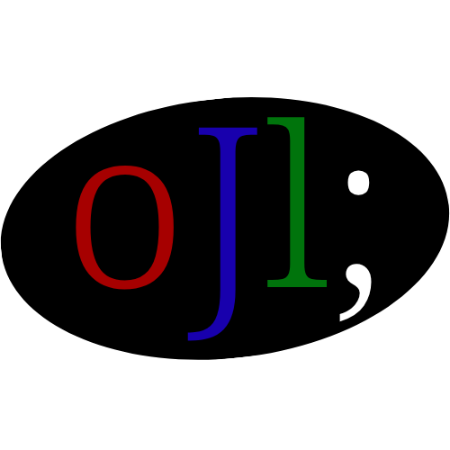

Baixe o oJl Reader
Obrigado por estar instalando o oJl!
O oJl é uma linguagem de programação experimental, ainda contém alguns erros.
Reporte os erros aqui:
Suporte oJL
Download leitor oJl Vb1
Baixar oJl Reader